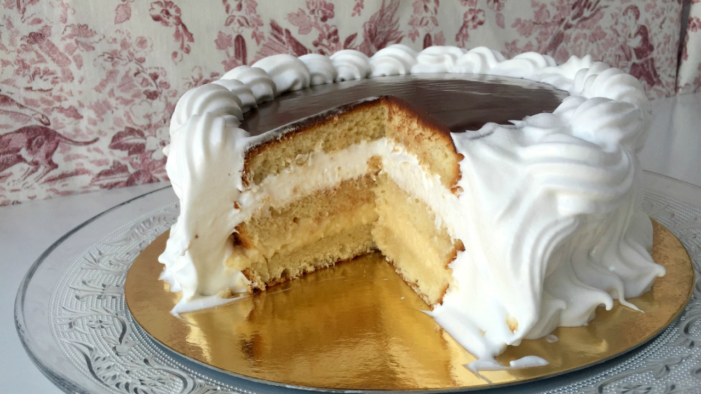
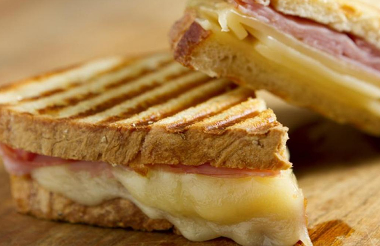

Conoce algunos de nuestro productos....
A conntinuacion te mostramos algunas imágenes tomadas de nuestros productos en la tienda,
es para tentarte un poquito, el resto, pasa a conocerlo en vivo..

Porción de torta cremosa frambuesa

Opción vegana super deliciosa

Chocotorta con 4 capas de dulce de leche

Variedades de café y en distintos tamaños

Masitas finas, seleccionadas
Yogurt con cereales y frutas de estación

Tostado de JyQ con pan de campo

Avocado con palta, huevos, mayonesa casera

Brunch abundante para 2